计算机视觉 · 第 4 章 特征检测与匹配
4.2 Harris 角点检测
上一节把问题归结为「找一个可重复的位置」。这一节给出第一个具体的答案：角点。课件的思路很干净——先看哪一类区域最容易在另一幅图里被认出（平坦区域、边缘、角点），再把「窗口平移一点，灰度变了多少」写成可计算的量，用泰勒展开把它化成一个 2×2 的矩阵，最后用特征值或响应值给每个像素打分。Harris 角点检测由此得到，它的最大优点是对旋转不变，而它留下的最大缺口是对尺度敏感——这个缺口正是 4.3 节的起点。
1. 从「哪一种区域更容易匹配」说起
课件先抛出一个问题：同一片场景里，哪一种区域更容易被识别和匹配？答案是角点。原因用一句话就能说清：
- （1）平坦区域：任意方向移动，无明显灰度变化；
- （2）边缘：沿着边缘方向移动，无明显灰度变化；
- （3）角点：沿着任意方向移动，灰度都会明显改变。
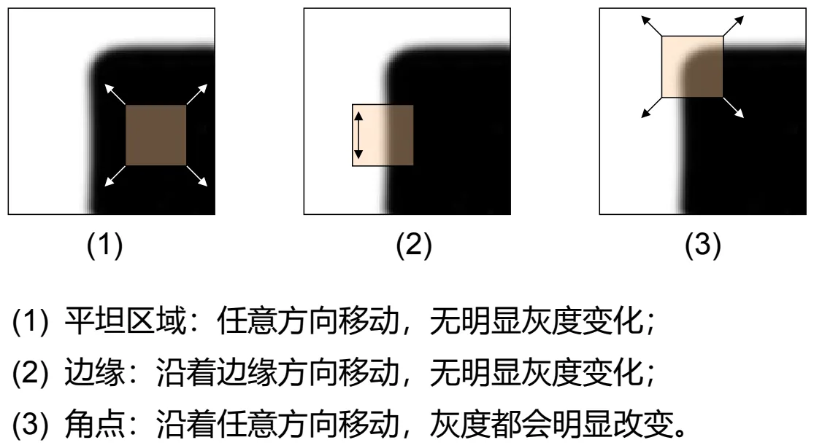
换个说法：平坦区域在哪个方向上都「没有信息」，边缘在一个方向上「没有信息」，只有角点在两个方向上都「有信息」。所谓「有信息」，指的是窗口稍微一动，框内的灰度就变了——这正是可重复检测的物理基础：位置稍有偏差，响应就会明显下降，因此极值点的位置是稳定的。
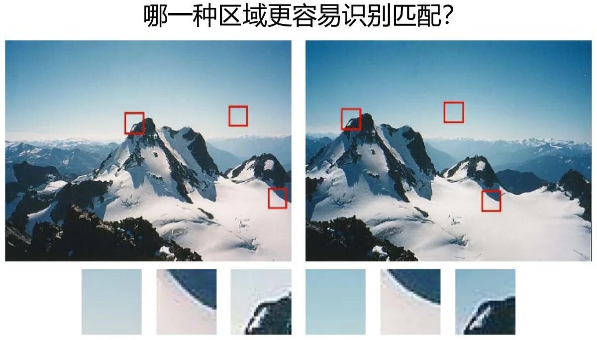
课件把这三类情形画在了同一种坐标系里：横轴是检测窗口位置的微小变化，纵轴是灰度值强度的变化。角点的曲线在原点附近呈陡峭的谷底（移动一点变化就很大），边缘是一个方向陡、另一个方向平，平坦区域则几乎是一条水平的直线。
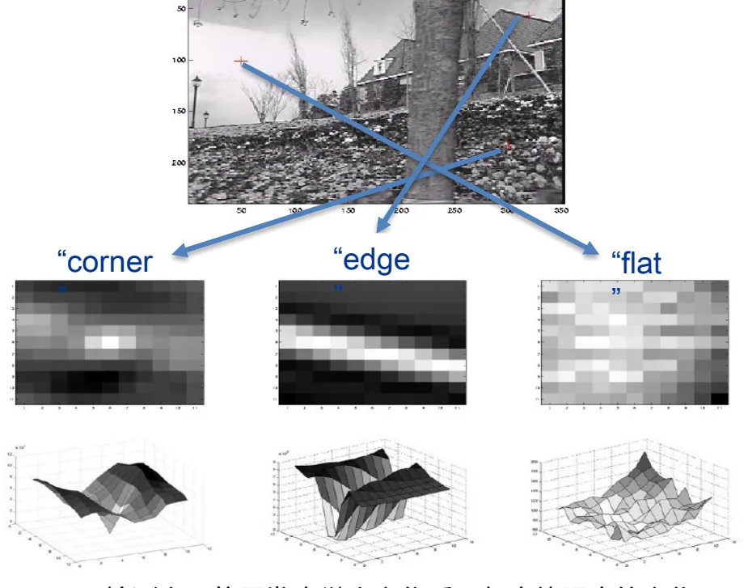
由此得到角点作为独特兴趣点的两条要求：容易在图像的局部区域检测得到；在任何方向上移动窗口都应该在强度上产生很大的变化。
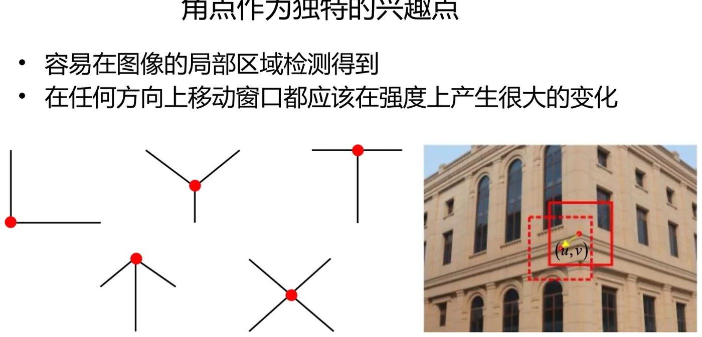
2. Harris 角点检测：把「变化」写成公式
上面的描述还停留在定性层面。Harris 的做法是定义一个可以计算的量：把图像窗口平移 (u, v)，看框内灰度的变化有多大。课件给出的定义是：
E(u, v) = Σx,y w(x, y) · [ I(x+u, y+v) − I(x, y) ]²
其中 w(x, y) 是窗口函数——一个在空间上变化的权重函数，最常用的两种取法是：窗口内取 1、窗口外取 0 的矩形窗，或者 Gaussian 窗（离中心近的像素权重大，远的权重小）。I 是图像灰度，E 就是「窗口平移 (u, v) 之后，框内灰度变化的加权平方和」。
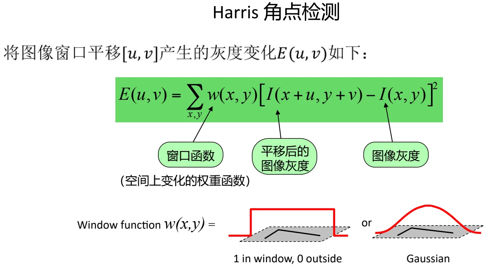
直接计算 E(u, v) 要遍历所有平移量，太慢。课件用一阶泰勒展开把 I(x+u, y+v) 在 (x, y) 处展开，把 E 化简成一个二次型：
E(u, v) ≈ [ u v ] · M · [ u v ]T
其中的 M 就是 Harris 矩阵，它由窗口内的一阶偏导构成。记
- A = Σx,y w(x, y) · Ix²
- B = Σx,y w(x, y) · IxIy
- C = Σx,y w(x, y) · Iy²
则 M = [ A B ; B C ]。也就是说，Harris 矩阵把窗口中所有像素的梯度信息汇总成了一个 2×2 的矩阵——图像怎么变，全在这个矩阵里。
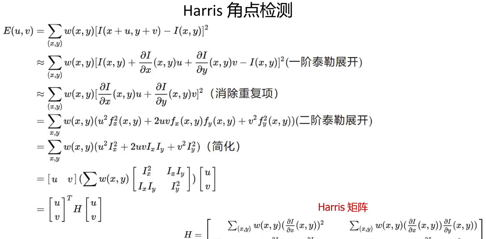
3. 特征值分析：三种区域，一句话说清
二次型的性质由矩阵 M 的特征值决定。对 M 做奇异值分解 SVD(H) = UΣVT，记λ1 为最大特征值、λ2 为最小特征值：
- 两个特征值对应的特征向量，可以确定变化最快的方向和变化最慢的方向；
- 两个特征值的大小，可以反映在最快变化方向和最慢变化方向上变化的快慢。
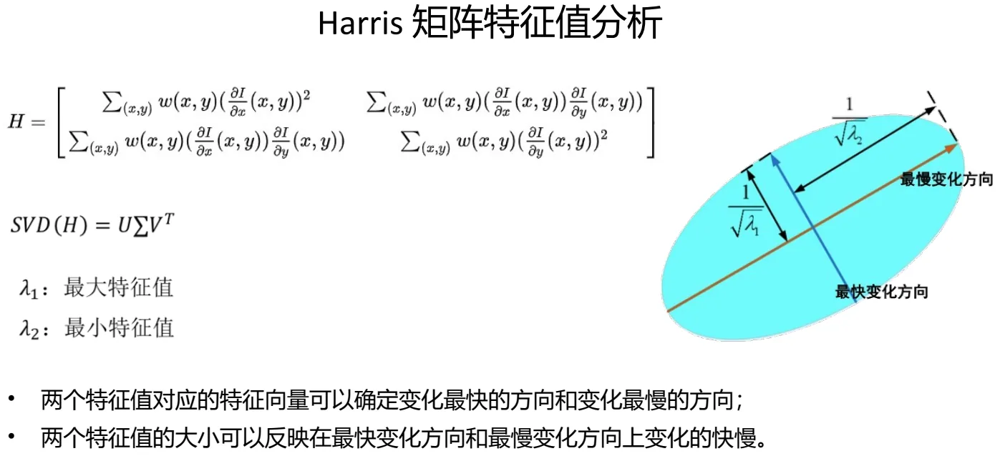
于是前面那张「平坦／边缘／角点」的定性图，可以用特征值精确地重新说一遍：
- λ1 ≈ λ2 ≈ 0：两个方向上灰度变化都很小，兴趣点位于光滑（平坦）区域；
- λ1 > 0，λ2 ≈ 0：一个方向变化快、一个方向变化慢，兴趣点位于边缘区域；
- λ1，λ2 > 0：两个方向变化都很快，兴趣点位于角点区域。
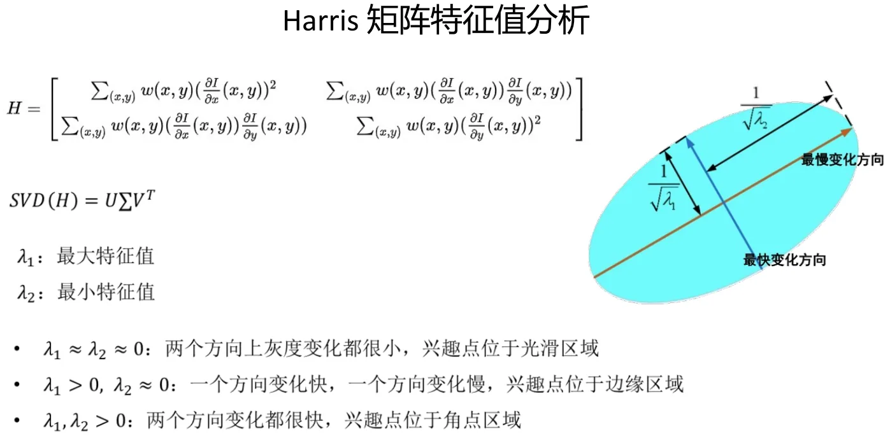
4. Harris 角点响应值：绕开特征值分解
特征值判据虽然在数学上干净，但逐像素做特征值分解，计算量很大。Harris 的办法是构造一个只依赖行列式与迹的角点响应值 R，把它当作「两个特征值是否都大」的替身：
R = det(M) − α · trace(M)² = λ1λ2 − α(λ1 + λ2)²
课件给出了三个使用要点：
- α 是一个经验常数，通常取 0.04 到 0.06 之间；
- det(M) 表示矩阵 M 的行列式，det(M) = λ1λ2 = AC − B²；trace(M) 表示矩阵 M 的迹，trace(M) = λ1 + λ2 = A + C；
- 只有当 λ1 和 λ2 同时取最大值时，R 值才最大。
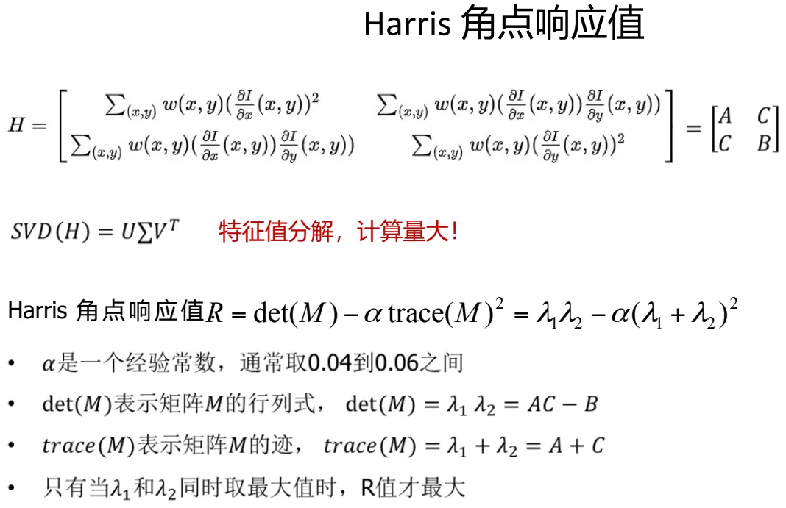
为什么这个替身有效？把 R 拆开看：det(M) 惩罚「有一个特征值很小」的情形（边缘上 λ2≈0，乘积就接近 0），trace(M)² 惩罚「两个特征值都很大」的极端情形（用来抑制少数异常强的响应）。两者相减，最大值自然落在「两个方向都有明显变化」的地方——也就是角点。
5. 算法流程与样例
Harris 角点检测的完整流程只有三步：
- 计算每个像素位置的 Harris 角点响应值；
- 找到 Harris 角点响应值大于给定阈值的像素点；
- 非极大值抑制：选取局部响应最大值作为特征点，避免重复的检测。
课件用连续的几页演示了这三步在真实图像上的效果：先算出每个像素的响应值 R（图 10），再用阈值把响应值低的像素滤掉，最后只保留局部最大的那些点。这一步「非极大值抑制」很关键——一个角点周围往往有一小片像素的响应都很高，如果全留下，同一个角点就会在匹配时被数成好几个。
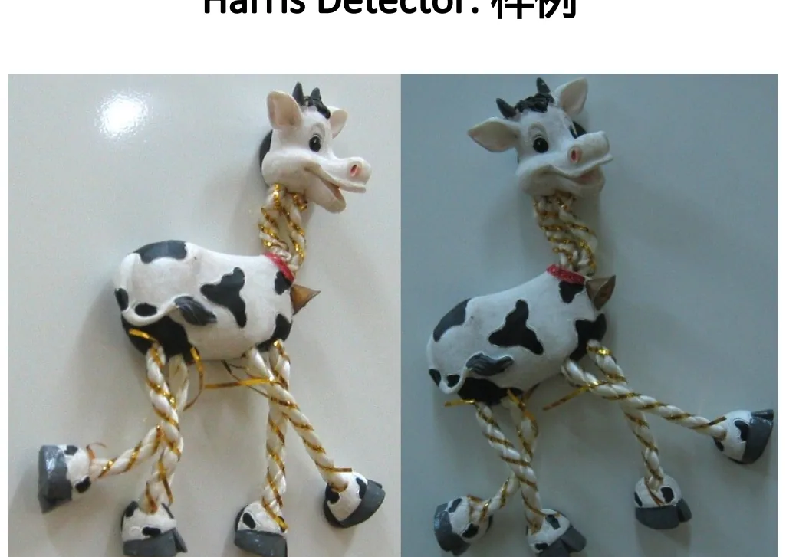
6. Harris 角点的性质
（1）对旋转不变
把图像旋转一个角度，椭圆的长短轴方向跟着转，但椭圆的形状不变，也就是特征值不变。特征值不变，响应值 R 就不变，检测到的角点位置也不变——所以角点响应值 R 对于图像的旋转具有不变性。
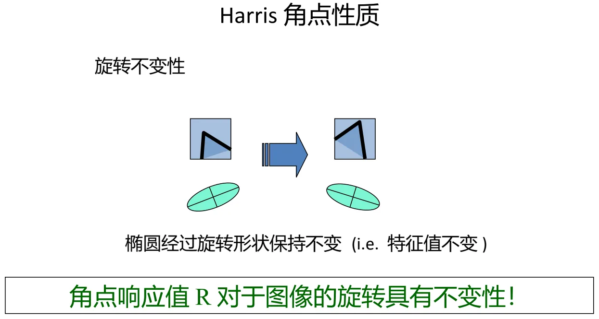
（2）但难以应对尺度变化
致命的短板在尺度上。图像尺度变了，而检测窗口的尺度没变，同一个物理角点的检测结果就完全不同：把图像放大之后，原本的一个角点在小窗口里看上去就成了一段边缘——课件的例子里，放大后的三个点都被当成了边缘点。
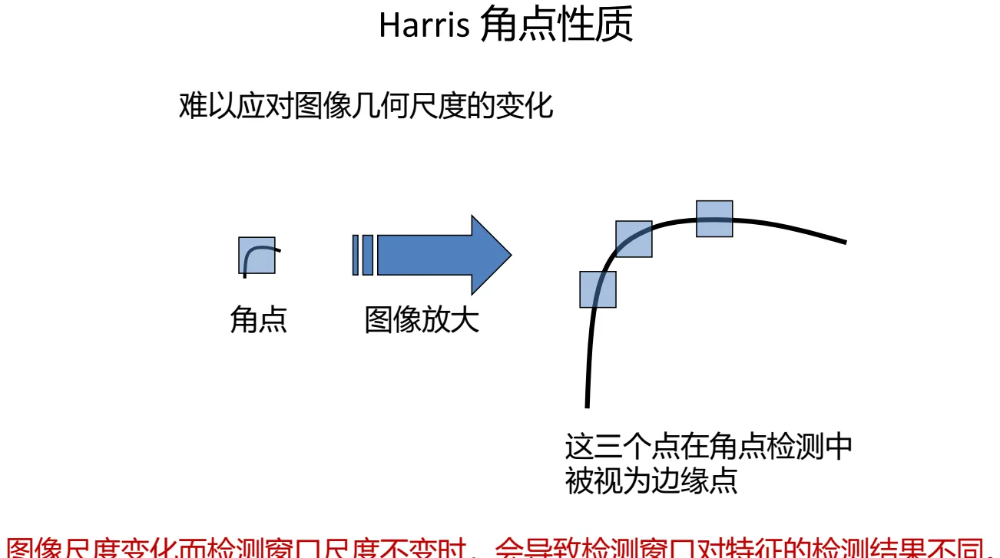
把两条性质放在一起看，Harris 的定位就清楚了：它解决了「哪些位置适合做关键点」，而且对旋转、对光照的线性变化比较稳健；但它没有解决「用多大的窗口去看」。于是下一节的中心问题自然出现——如何让检测窗口的尺度自己动起来？
本节小结
- 三类区域：平坦区域（任意方向移动都无明显灰度变化）、边缘（沿边缘方向移动无明显变化）、角点（任意方向移动灰度都明显改变）——角点最适合做可重复的关键点。
- 用窗口平移引起的灰度变化来量化：E(u, v) = Σ w(x, y)·[I(x+u, y+v) − I(x, y)]²，窗口函数 w 取矩形窗或 Gaussian 窗。
- 一阶泰勒展开后 E(u, v) ≈ [u v]·M·[u v]T，M 即 Harris 矩阵；记 A、B、C 为加权梯度平方与乘积，则 M = [A B; B C]。
- 特征值判据：λ1≈λ2≈0 为平坦区域，λ1>0 而 λ2≈0 为边缘，两者都大于 0 为角点；特征向量给出变化最快与最慢的方向。
- 为绕开特征值分解，改算响应值 R = det(M) − α·trace(M)² = λ1λ2 − α(λ1+λ2)²，α 取 0.04～0.06。
- 算法流程三步：计算 R → 阈值筛选 → 非极大值抑制。
- 性质：对旋转不变（椭圆旋转后特征值不变）；但难以应对尺度变化——窗口尺度不变而图像尺度变化，角点会被当成边缘点。